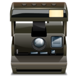

De: La Frikipedia, la enciclopedia extremadamente seria.
De: La Frikipedia, la enciclopedia extremadamente seria. De: La Frikipedia, la enciclopedia extremadamente seria.

|

|
|
|
|
|
| ||
|---|---|---|---|---|---|---|---|---|
| Template Squad | Plantillas administrativas | Navboxes | Plantillas temáticas | Infoboxes | Frikiboxes | Plantillas para usuarios | Emoticonos | Directorio |

Aquí se encuentran las plantillas administrativas, plantillas relacionadas con las tareas administrativas de La Frikipedia. Por favor, antes de utilizar una plantilla, lee la explicación sobre su uso. Si tienes dudas sobre su uso, puedes consultar a un administrador. Las plantillas están ordenadas alfabéticamente.
El autor de estos artículos no tiene un problema, ni dos, sino tres problemas con la ortografía.

|
ATENCIÓN Este artículo o sección es ilegible. Su autor se cree que está hablando por el méssenller, y un mono con un rodillo tendría menos faltas de ortografía. Por tanto, hay que editar el articulo revisando la ortografía, para vergüenza de su autor y regocijo de su corrector. |
{{analfabeto}}Para poner en las páginas de usuario o discusiones de gente que toca mucho las pelotas y debe ser baneada por un admin por el bien de la frikipedia.

|
BLOQUEADO Este usuario será bloqueado |
|
{{bloqueo|motivo}}Cuando alguien cree que un artículo sencillamente debe ser eliminado.

|
Propuesto para borrado Algún usuario cree que este artículo debería ser borrado por tal motivo. En la discusión puede uno explayarse, defender sus posturas, hablar a gritos y tirarse botellas a la cabeza. |
{{Borrado|motivo}}El formato debe de ser algo muy enigmático como para entenderlo... en fin.

|
ATENCIÓN El autor de este artículo es un auténtico borrico. Como no se ha leído las ayudas, se ha saltado a la torera un porrón de normas. Por tanto, hay que modificar el artículo, ya que de no haber nadie que lo modifique puede ser eliminado. |
{{borrico}}Para artículos o imágenes que necesitan ser categorizados

|
Categorizar |
| Este artículo no está categorizado porque el autor no quería o no sabía o no podía categorizar. O bien está mal categorizado. En cualquiera de los casos categorízalo y ayuda a la Frikipedia. |
{{categorizar}} o {{categorizar|i}} (si se trata de una imagen).Para artículos con demasiados enlaces en rojo que lo afean y deben ser retirados.
| CÓRTATE, TÍO El autor de este artículo se ha creído que hay que poner enlaces en todas las |
{{córtate}}Artículos cuyo autor admite que cuando están ideando el artículo hacen un solo desorden. (Es para usar en vez de {{enobras}}
 Atención, atención: Desorden del copón Atención, atención: Desorden del copón El constructor/editor de este artículo sigue los dictados de su inspiración, y por tanto deja las frases y apartados a medias mientras edita. Es altamente recomendable no leer este artículo mientras dure la edición, so consecuencia de sufrir esguince cerebral. |
{{completodesorden}}Para los artículos que no hacen honor al nombre del artículo...
| ATENCIÓN Este artículo no tiene nada que ver con |
{{Nadaquever}}Hay artículos en los Chuck es lo único que aparece, tenemos que reescribir el artículo

|
ATENCIÓN Este artículo peca de Chucknorritis aguda. Su autor piensa que todo en este mundo se puede arreglar con patadas giratorias y atenta contra el Segundo y/u Octavo mandamiento. |
{{chucknorritis}}Para los artículos que no tienen enlaces internos

|
ATENCIÓN
El autor de este artículo se ha olvidado de enlazar otros artículos y ha perpetrado un Deadend. |
{{Deadend}}Algún día entenderemos la terrible verdad que conlleva esta palabra. Algún día...
| |
ATENCIÓN
Ésta es una página de desambiguación para que no te pierdas buscando lo que quieres. Es decir, una ayuda a la navegación que ordena páginas que de otra forma compartirían un mismo título. |
{{desambiguación}}Ejem, bueno, alguna de estas plantillas no pueden faltar si no esta terminado.

|
ATENCIÓN
Este artículo está en construcción. Su autor puede estar en la hora del bocata o haberlo dejado a medias. Si no eres quien está trabajando en el artículo ten cuidado con lo que haces. Si eres el editor ¡termínalo ya! |
{{enobras}}Se ha de colocar cuando me salga de los huevos cuando el artículo sea muy corto.

|
ATENCIÓN Este artículo es un truño, es sólo un esbozo del artículo o es demasiado corto o el que lo ha escrito se cree que esto es un vil diccionario. Su autor puede estar bajo los efectos del alcohol o ser un inútil. Quizá haya pistas en la discusión. ¡Mejora la Frikipedia ampliando y mejorando el artículo! |
{{esbozo}}Para aquellos artículo que son mas de un artículo en si mismos.

|
ATENCIÓN Este artículo debería separarse en varios artículos. Ya que o bien habla de varios temas a la vez o que contiene definiciones o es tan extenso que debería ser dividido. Así que entra y corta, fragmenta, despedaza, trincha, escinde, parte, divide, separa, aisla, fracciona, amputa, cercena y secciona el artículo en varios de ellos. Si no sabes como empezar mira la discusión del artículo. Y no olvides desambiguar después. |
{{escindir}}Se debe colocar en los artículos que no son malos y de los que se pueden sacar buenas idéas, pero que son demasiado cortos.

|
FRIKIPEDIA QUIERE QUE ESTA DEFINICIÓN
PASE A SER UN ARTÍCULO FRIKIPÉDICO La información contenida en este artículo es una mínima parte de su jugo total, así que ponte los guantes, saca el tupperwere y empieza a exprimir el tema. Si lo haces serás recompensado con una galleta en almíbar y algo más. |
{{expandir}}Para aquellos artículos que algún idiota hizo que estuviera repetido.
| |
Hay frikipedistas que creen que este artículo debería ser fusionado con tal otro. |
|---|
{{fusión|(nombre del artículo para fusionar)}}Para artículos ya fusionados que necesitan una fusión de historiales (valga la redundancia).
Nota: la plantilla debe colocarse en el artículo del que se ha extraído la información y no el artículo que ha sido resultado de la fusión.
| |
Este artículo ha sido fusionado con tal otro, por lo que se requiere una fusión de historiales por parte de un admin |
|---|
{{fusionado|(nombre del artículo que resultó de esa fusión)}}Que no tenéis vergüenza. ¡¡Blasfemos!!

|
ATENCIÓN Este artículo es una herejía. Su autor debería ser quemado en la hoguera para purificar su alma. Ha leido poco la Frikipedia y ha soltado una sarta de chorradas sin sentido. Alguien debe corregir el artículo para que no entre en confrontación con el saber frikipédico. |
{{hereje}}Se usa en los artículos que no tienen enlaces desde ninguna otra página, sólo se retira cuando hay enclaces en "Lo que enlaza aquí" por lo que la edición no se da en el mismo artículo sino desde otros

|
ATENCIÓN Este artículo está huérfano, quicir, ningún otro artículo enlaza a este artículo. Busca algún artículo que pueda enlazar aquí ya sea por mención o por relación temática y apadrínalo por lo que más quieras. |
{{Huérfano}}Para los artículos que no han sido ilustrados y están sosos, sin imágenes.
|  | ÉSTE ARTÍCULO NECESITA SER ILUSTRADO
Busca una afoto en nuestro Depósito de Imágenes, o donde sea, y ponla, pero que no sea pr0n que se cabrea el señor del Adsense y nos corta el grifo de los dólare. Y sin dólare no hay servidor... |
{{Afoto}}Para los artículos que no se entienden con facilidad:
| ¿ | ¿Eins? Este artículo es incomprensible. Algún listillo se empeñó en poner cosas que sólo él entiende y ahora nadie sabe de lo que está hablando. Si eres el autor, o sabes de que trata el artículo arréglalo para que quede más claro. |
? |
{{Incomprensible}}Para aquellos a los que les gusten de poner datos aleatorios...

|
ATENCIÓN Como sabemos que es realmente difícil (o por lo menos da pereza) ir a la ayuda de las infoboxes, copiar la estructura para la infobox, y pegarla en el artículo..., te hemos facilitado la vida. Ahora sólo tienes que rellenar los campos metiéndote aquí, si es que de verdad hemos querido facilitarte la vida. Cuando hayas terminado ¡del todo! (incluidas las fotos), puedes quitar esto. |
{{pereza}}Cuando un artículo es malo a rabiar, pues o se le pega al dueño o se le pone esto.

|
ATENCIÓN Este artículo es simple y llanamente malo. El autor tiene un humor de díficil comprensión para los frikipedistas en general o es que realmente no tiene ni puta gracia. Si crees que puedes mejorarlo inténtalo. |
{{malo}}A ver si nos leemos las normas, recoña.

|
ATENCIÓN El autor de este artículo no aprendió geometría en el colegio, ha leído muy pocos libros en su vida y/o no se ha leído las ayudas. Así que es incapaz de producir un texto medianamente maquetado. Por lo tanto es necesario remendar el artículo. |
{{maquetar}}Para esos artículos escritos en los malos momentos...

|
ATENCIÓN Este artículo es fruto de un momento maricona. No es el tipo de artículos que queremos en la Frikipedia ya que consiste sólamente en críticas destructivas hacia algo, sin ánimo de sátira o de risa. ¡Mejora la Frikipedia des-mariconizando el artículo! |
{{maricona}}Estos artículos que dan ganas de pegarle una paliza al autor.

|
ATENCIÓN Este artículo está en La Picota. Su autor ha escrito un supertruño, que ni viene a cuento ni tiene puñetera gracia. |
{{picota}}Para afotos hechas con la simple ayuda del paint y que deben ser retocadas

|
¡Retocamelón! |
| Esta imagen es simple y llanamente un truñaco creado por un tío que se piensa que se llega muy lejos retocando imágenes con el paint. Necesita que alguien potochopee o GIMPee la imagen en cuestión. Así que si eres un alma caritativa y tienes buen control de los programas de retoque administrativas sube una nueva versión de la imagen y decenta la imagen | 
|
{{retocar}}Estos artículos comenzaron fuerte, pero, sólo eso... comenzaron.

|
ATENCIÓN El autor de este artículo pide una ayudita. Porque es más triste de robar que de pedir. Se le han terminado las ideas y pide de rodillas a los frikipedistas (más listos, inteligentes y guapos que él) que le ayuden a terminar o mejorar su obra. |
{{unayudita}}Estos artículos contienen interminables y aburridas listas que hay que acortar por el bien de nuestra capacidad cognitiva:

|
¡LISTA!
Este artículo o sección no es más que una torpe lista. Si crees que vale la pena, edítalo para que tenga párrafos y esas cosas. |
{{anti-lista}}Estos artículos quieren ser cebras tienen demasiados tachones y son díficiles de leer.

|
ATENCIÓN Este artículo contiene demasiados tachones y en vez de provocar gracia, parece los apuntes de un niño de preescolar. Ya puede ser porque el autor es un novato, bien es un topo sin vista, o simplemente algún n00b que se cree que abusar del chiste |
{{tachones}}Para los demasiado serios. A ver si ponemos algo gracioso, leñe.
| Creíble. Este artículo es demasiado creíble para poder permitírsele el paso. Por favor, el autor, o alguien que pase por aquí, meta alguna locura humorística, para terminar de reírme. |

|
{{Serio}}Para artículos con una ortografía muy "PRuOPia".

|
¡¡¡ARGH, MIS OJOS!!! Este artículo está escrito así por algún motivo. Puede contener masivas faltas de ortografía u otros horrores lingüísticos. |
{{sic}}Anda que... hay cada artículo.
{{Sobrada}} 
|
PACO!! Esta sección o apartado del artículo es muy mala, por favor mejórala para que este artículo sea la caña. |
{{Apartadomalo}}¿Algo ronda mal en Frikipedia? ¿Ves que algo va mal en segun que artículos y nadie ha creado una plantilla para reparar ese problema? Crea en esta sección la plantilla que consideres necesaria y si lo vemos necesario, puede que algun día se convierta en algo de lo que podamos sacar provecho.
Autor(es):